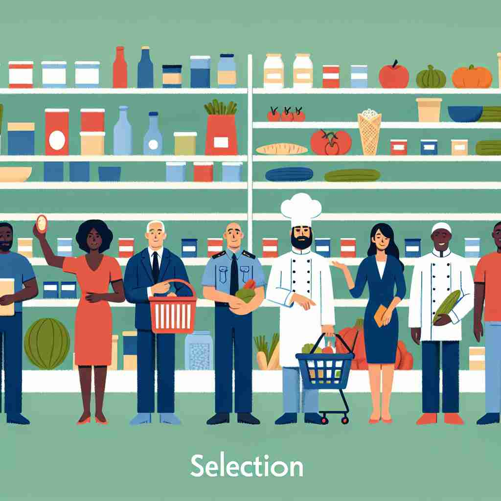
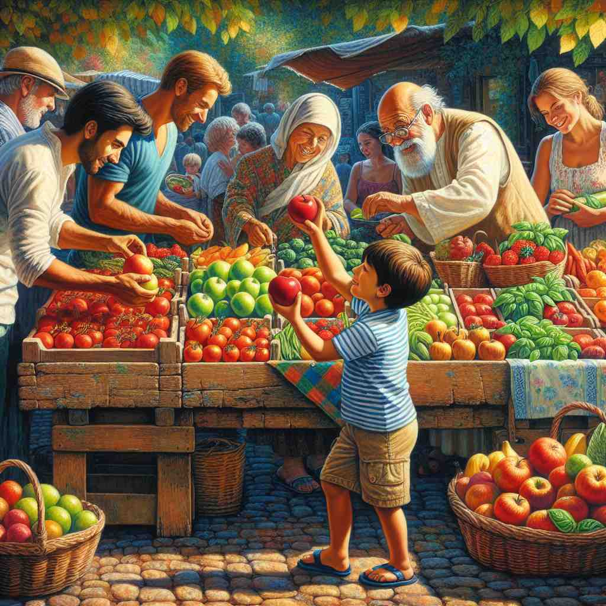

💬 Customers are here to make a selection from the shelves. 顾客们在这里从货架上进行选择。

💬 The girl wants to make a selection of the best apples. 女孩想要挑选最好的苹果。

💬 The boy is excited to make a selection of apples. 男孩兴奋地选择苹果。
💬 Customers are here to make a selection from the shelves. 顾客们在这里从货架上进行选择。
💬 The girl wants to make a selection of the best apples. 女孩想要挑选最好的苹果。
💬 The boy is excited to make a selection of apples. 男孩兴奋地选择苹果。
🧠 理解'selection'的关键在于把握'选择'这个核心概念。无论是人为选择、选择的结果，还是自然界的选择过程，都源于这个基本含义。想象一个人在众多选项中挑选，这个画面可以帮助你联想'selection'的各种用法。
🔈 [sɪ'lekʃ(ə)n]
🗝️ n. the act or process of choosing something or someone 选择某物或某人的行为或过程
🎭 在一个热闹的市场中，顾客们在挑选新鲜的水果。每个人都仔细查看苹果、香蕉和葡萄，确保选择最优质的水果。这体现了 'selection' 作为选择过程的含义。
💬 The selection of candidates for the job was based on their qualifications. 候选人的选拔是基于他们的资格。
🌳 由词根 "select"（选择）和名词后缀 "-ion" 组成，表示选择的过程或结果，即 "选择，挑选"。
💡 可以将 "selection" 拆分为 "select" 和 "-ion"，联想成 "选择的结果"，帮助记忆其作为名词的用法。
🗝️ n. a group of things or people that have been chosen 一组被挑选的事物或人。
🎭 在一场盛大的颁奖典礼上，主持人宣布了一系列入围影片。这些影片经过严格的筛选，成为今年最佳电影的 'selection'，展现了 'selection' 作为被选定的一组事物的含义。
💬 The store offers a wide selection of wines. 这家商店提供种类繁多的葡萄酒。
🤔 从"选择的过程"扩展到"选择的结果"
🗝️ n. a passage or extract from a book, piece of music, etc. 书籍、乐曲等中的一段或片段。
🎭 在一个安静的教室里，老师正在阅读一本文学作品的精彩片段。学生们认真聆听这个经精心挑选的 'selection'，感受其中的韵味和情感。
💬 The choir performed a selection of popular songs. 合唱团演唱了一系列流行歌曲。
🤔 从整体中"选择"的一部分
🗝️ n. the process by which organisms better adapted to their environment tend to survive and produce more offspring 这个过程是指更好地适应其环境的生物往往更能生存并繁衍更多后代。
🎭 在一片壮丽的野生动物园中，生态学家观察到动物如何通过适应环境来增进生存和繁衍后代。这展示了自然界中的一个重要法则：自然 'selection'。
💬 Darwin's theory of natural selection revolutionized biology. 达尔文的自然选择理论彻底改变了生物学。
🤔 自然界中的"选择"过程